Vec, String, and HashMap
three collections cover almost everything. growable, on the heap, owned by you.
Three collections
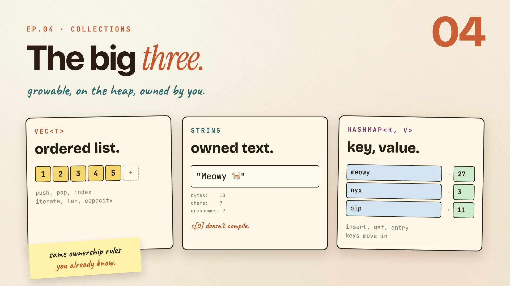
Three collection types cover almost everything you'll reach for. All three grow, all three live on the heap, and all three are owned by you, the same ownership rules from episode 2.
Vec<T>is an ordered list.Stringis owned text.HashMap<K, V>pairs a key with a value.
Different shapes, same rules.
Remember: same rules. new shapes.
Vec<T>
Book · §8.1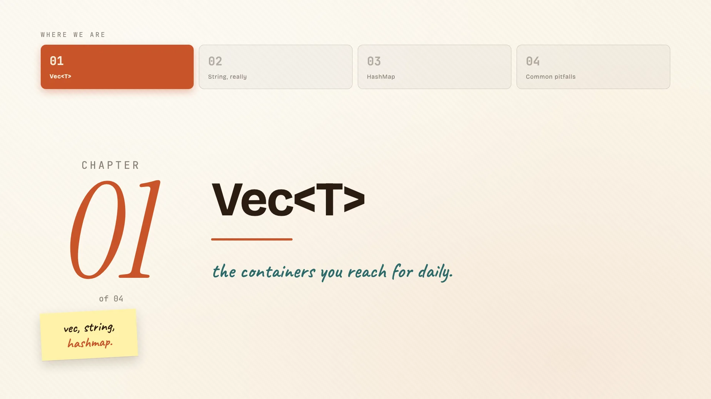
The container you reach for daily: an ordered, growable list of one type.
Why a Vec?
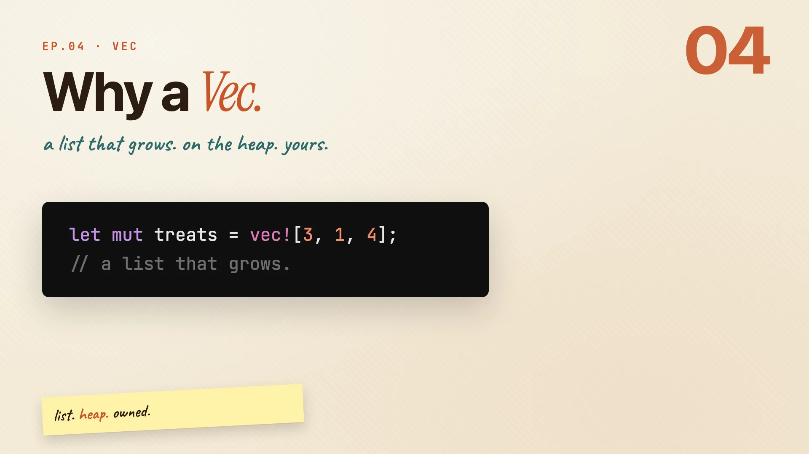
let mut treats = vec![3, 1, 4]; // a list that grows
- Grows. An ordered list of one type that resizes itself. An array can't.
- Heap. The buffer lives on the heap. That's what lets it grow while the program runs.
- Owned. It drops its items when it drops. The ownership rules from before still apply.
Remember: list. heap. owned.
Making a Vec
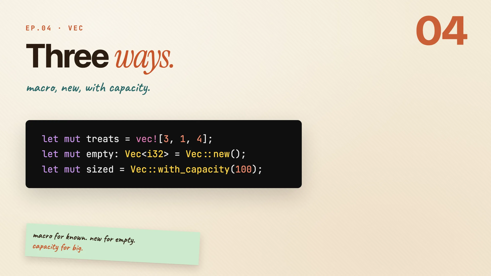
let mut treats = vec![3, 1, 4];
let mut empty: Vec<i32> = Vec::new();
let mut sized = Vec::with_capacity(100);
vec!is the macro. Start with values inside, the type is inferred.Vec::newmakes an empty one. Give it a type, since there's nothing inside to infer from.Vec::with_capacity(100)reserves room for 100 before the next resize, zero items yet. Use it when you know roughly how many are coming.
Remember: macro for known values.
newfor empty. capacity for big.
Changing a Vec
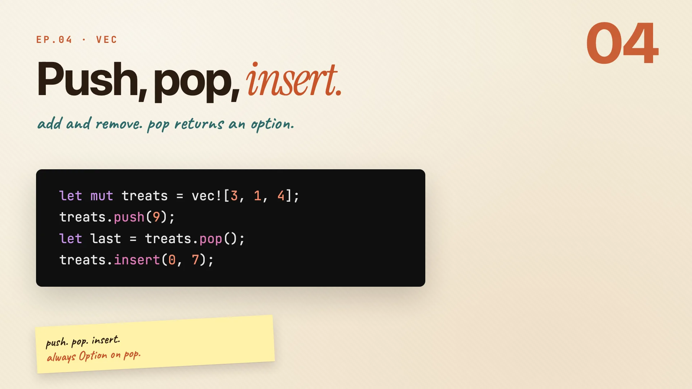
let mut treats = vec![3, 1, 4];
treats.push(9);
let last = treats.pop();
treats.insert(0, 7);
pushadds to the end, growing if it has to.popreturns anOption, because the Vec might be empty.Noneif empty,Some(value)otherwise.insertputs an item at any index. Items after it shift right;removeshifts left.
Remember: push, pop, insert. always an Option on pop.
Reading a Vec
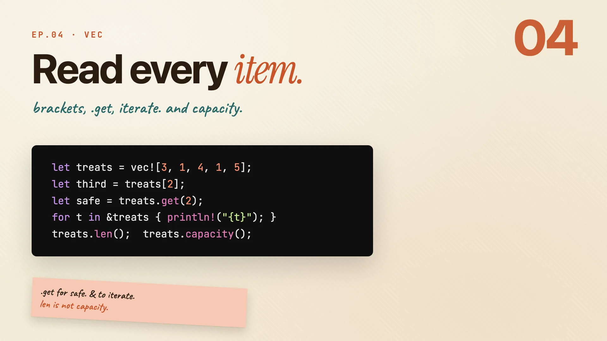
let treats = vec![3, 1, 4, 1, 5];
let third = treats[2];
let safe = treats.get(2);
for t in &treats { println!("{t}"); }
treats.len();
treats.capacity();
[]panics on an out-of-range index. Fast path when you're sure..getreturnsOption<&T>:Nonewhen missing. Safer.for x in &vborrows to read. Eachxis a&T, no move.lenvscapacity: length is real items, capacity is room before the next resize.
Remember:
.getfor safe.&to iterate. len isn't capacity.
String, really
Book · §8.2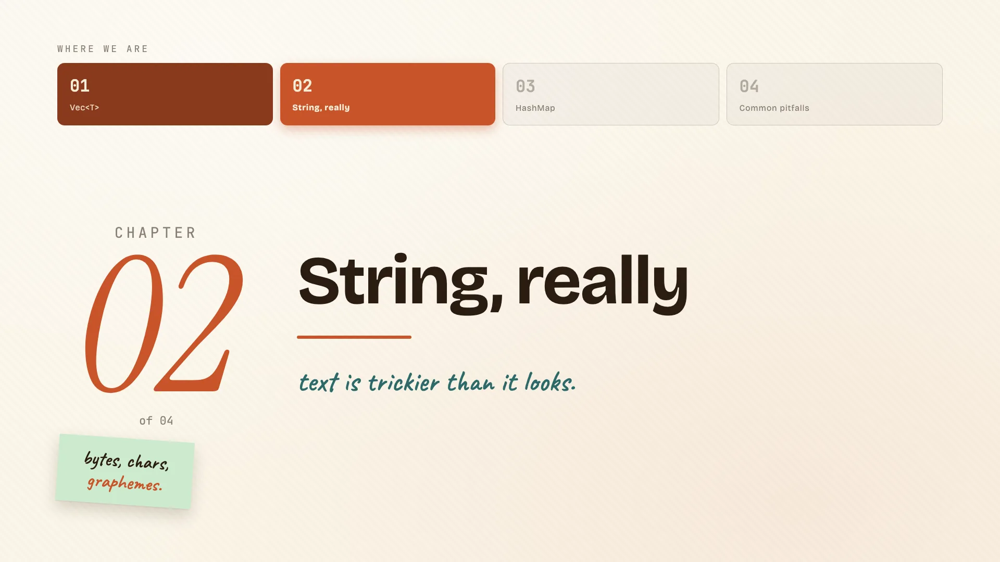
Text is trickier than it looks. Bytes, chars, and graphemes are not the same thing.
&str vs String
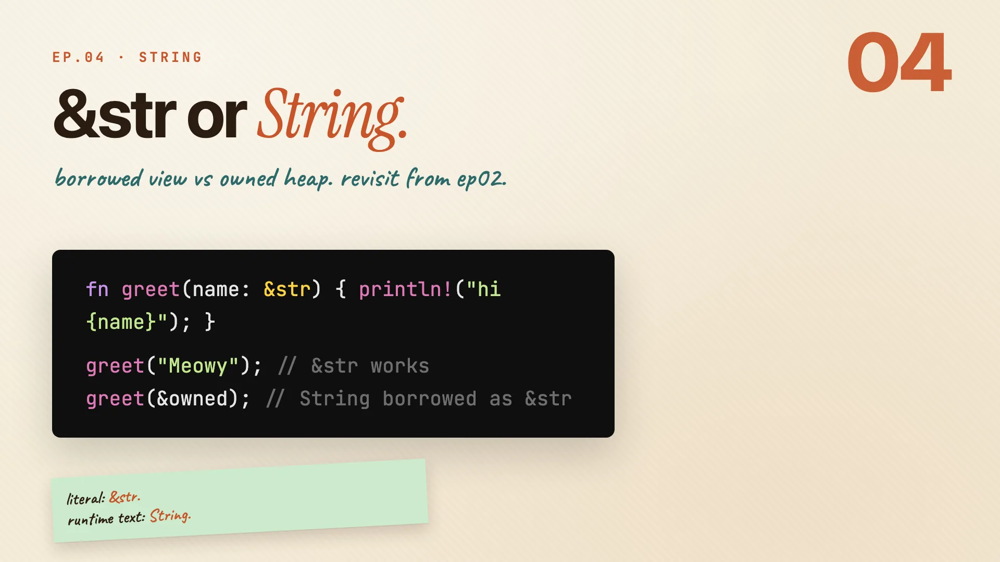
let lit: &str = "Meowy";
let owned: String = String::from("Meowy");
fn greet(name: &str) { println!("hi {name}"); }
greet(&owned);
&stris a borrowed view of text. Fixed size, cheap to pass.Stringis owned, on the heap, growable. You control its lifetime.- Accept
&strin functions: it works for both literals andStringreferences, one signature.
Remember: literal:
&str. runtime text:String. accept&str.
Strings are UTF-8 bytes
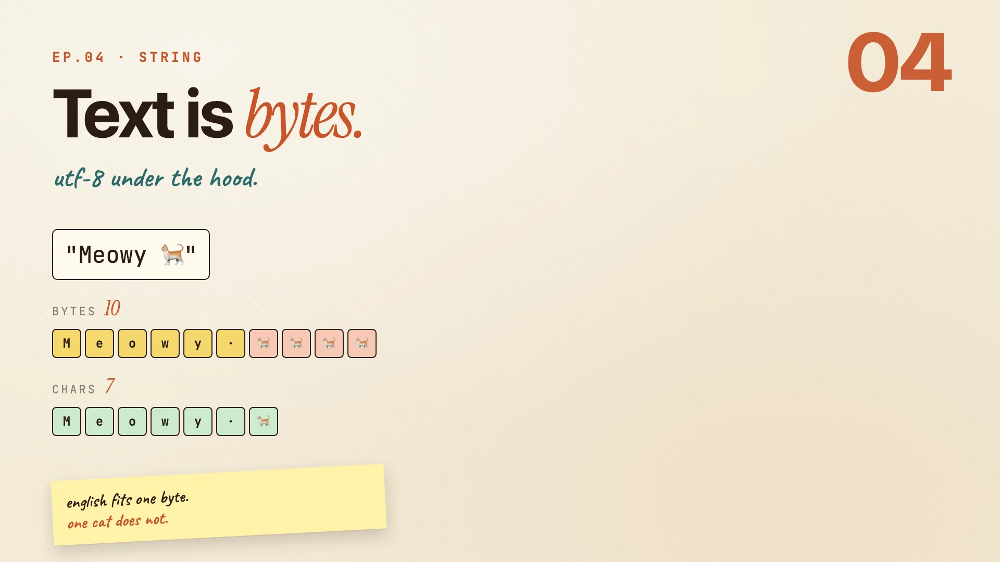
Inside, a String is a list of bytes encoded as UTF-8. One character can take more than one byte. Take "Meowy 🐈":
| Count | Value | Why |
|---|---|---|
| bytes | 10 | 6 ASCII (1 byte each) + 4 for the cat emoji |
| chars | 7 | the emoji counts as one char |
| graphemes | 7 | and as one grapheme |
ASCII is one byte each. The cat is one character, but four bytes.
Remember: english fits one byte. one cat does not.
Why s[0] doesn't compile
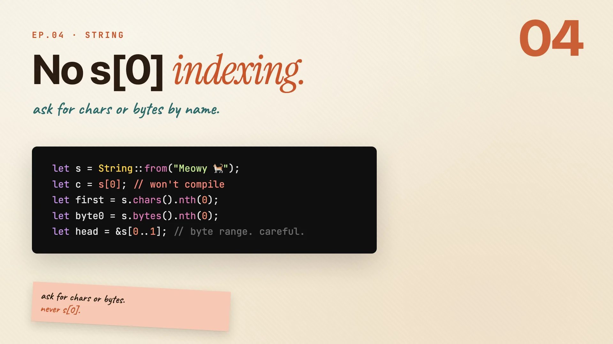
let s = String::from("Meowy 🐈");
let c = s[0]; // won't compile
let first = s.chars().nth(0);
let byte0 = s.bytes().nth(0);
let head = &s[0..1]; // careful: byte range
s[0]asks "which byte?" and Rust refuses. A compile error, not a runtime panic..chars()gives an iterator ofchar..nth(0)returns the first..bytes()gives the bytes instead.&s[0..n]slices by bytes, and panics if the range cuts a character in half. Stay on char boundaries.
Remember: ask for chars or bytes. never
s[0].
Building strings
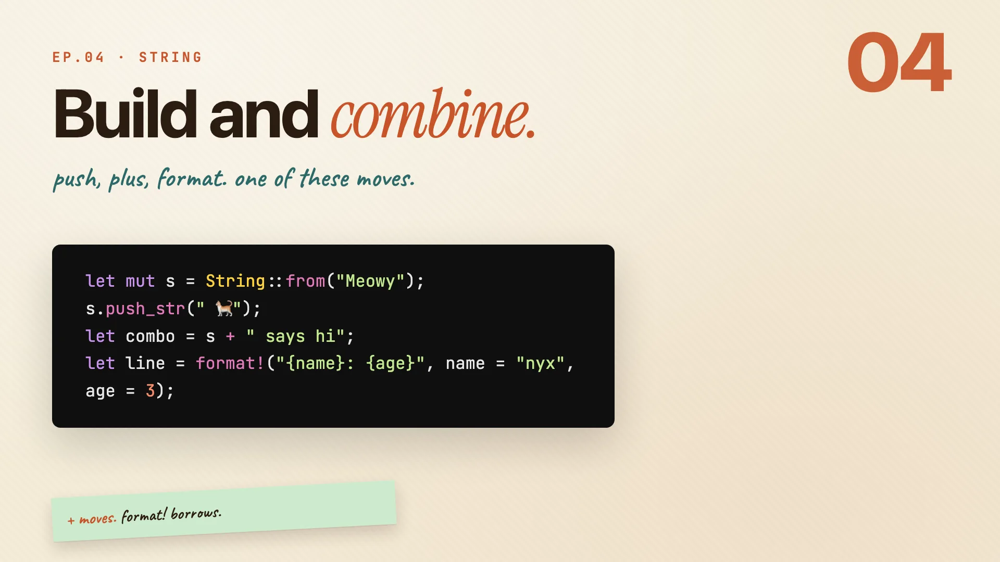
let mut s = String::from("Meowy");
s.push_str(" 🐈");
let combo = s + " says hi";
let line = format!("{name}: {age}", name = "nyx", age = 3);
push_stradds a&strto the end.pushadds a singlechar.+concatenates, but takes the left side by value. The left is gone after.format!does the same and borrows everything, returning a newString. No moves. Reach for it when you can.
Remember:
+moves the left.format!borrows.
HashMap
Book · §8.3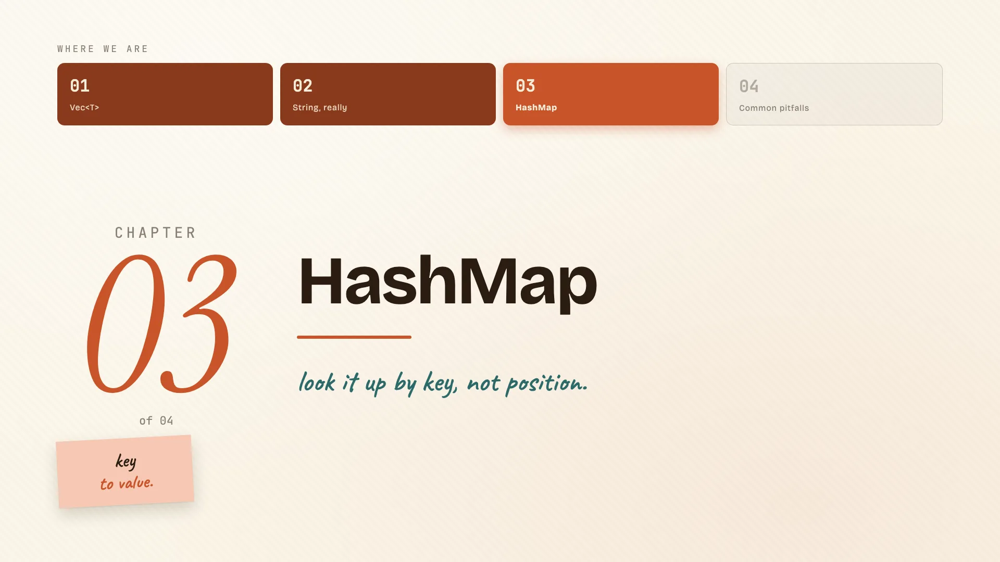
Look something up by key, not by position.
Why a HashMap?
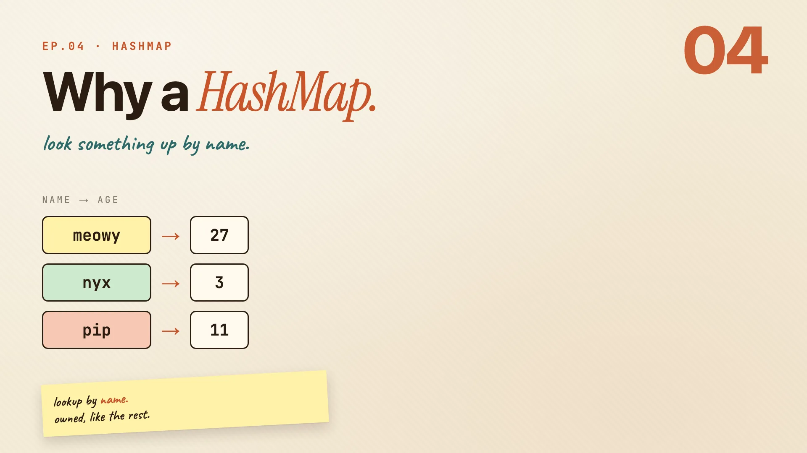
A HashMap is a key, a value, and a way to look it up by name:
meowy -> 27
nyx -> 3
pip -> 11
- Key to value. Point a name at a value, with constant-time lookup.
- vs Vec. A Vec answers "what's at position 3?" A HashMap answers "what's at meowy?"
- Owned. Every key and value lives inside the map. It drops them with it.
Remember: lookup by name. owned, like the rest.
Using a HashMap
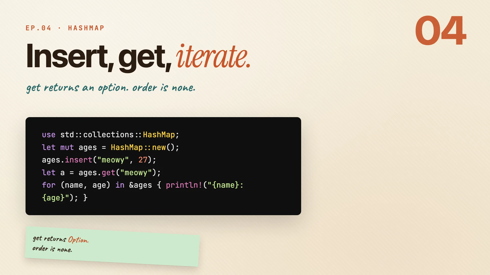
use std::collections::HashMap;
let mut ages = HashMap::new();
ages.insert("meowy", 27);
let a = ages.get("meowy");
for (name, age) in &ages { println!("{name}: {age}"); }
newmakes an empty map.KandVare inferred from the first insert.insertpairs a key with a value. The same key replaces, returning the old value as anOption.getreturnsOption<&V>, because the key might not be there. You unwrap or match.for (k, v) in &mapborrows to read all. The order is not stable, don't rely on it.
Remember: get returns an Option. order is arbitrary.
Who owns the keys?
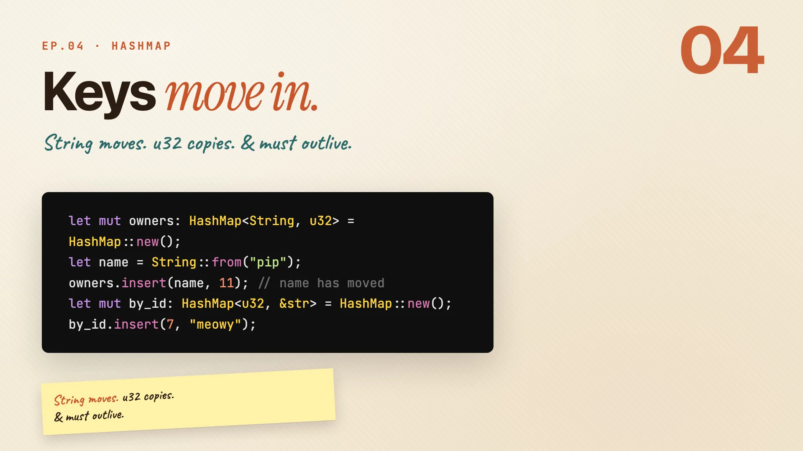
use std::collections::HashMap;
let mut owners: HashMap<String, u32> = HashMap::new();
let name = String::from("pip");
owners.insert(name, 11); // name has moved
let by_id: HashMap<u32, &str> = HashMap::new();
- String keys move into the map. You can't use
nameafter the insert. - Copy keys (
u32,bool,char...) are duplicated, not moved. You can still use them. - Reference keys (
&str) work if the data outlives the map. Lifetimes still apply.
Remember: String moves. u32 copies. a
&must outlive the map.
The check-then-insert mess
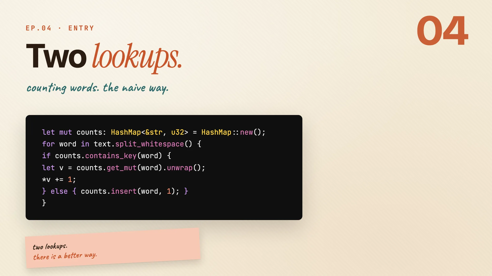
Counting words the obvious way takes two lookups on every hit:
let mut counts: HashMap<&str, u32> = HashMap::new();
for word in text.split_whitespace() {
if counts.contains_key(word) {
let v = counts.get_mut(word).unwrap();
*v += 1;
} else {
counts.insert(word, 1);
}
}
contains_keyasks first, a boolean answer.get_mut+unwrapis the second lookup. Thatunwrapis a smell, not a feature.- The
else: insertis a third branch. Two lookups on the hot path, for one update.
Remember: two lookups. there's a better way.
The entry API
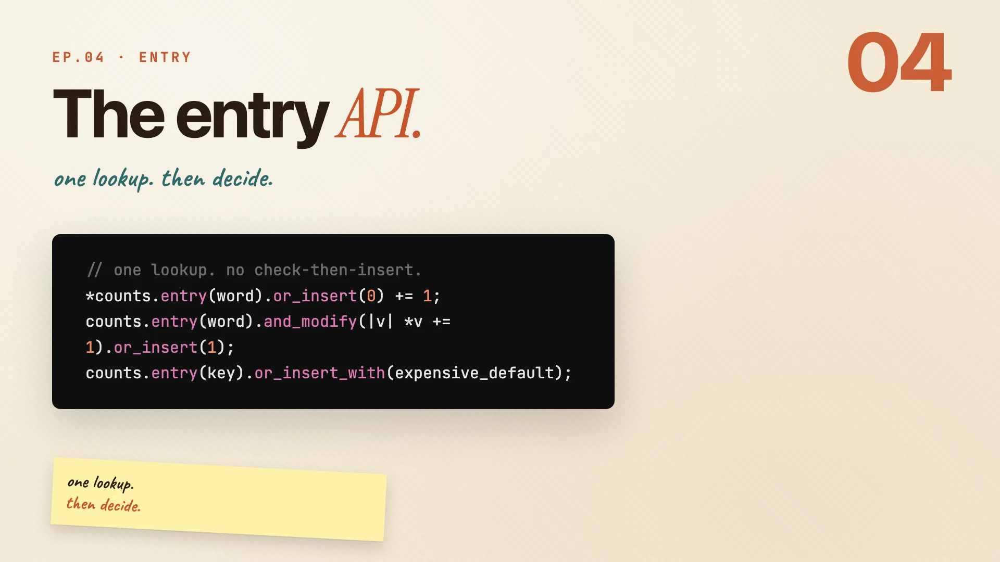
*counts.entry(word).or_insert(0) += 1;
counts.entry(word).and_modify(|v| *v += 1).or_insert(1);
counts.entry(key).or_insert_with(expensive_default);
.entry(k)does a single lookup and hands you the slot, whether it exists or not..or_insert(v)drops in a default if missing, and returns&mut Veither way. Dereference and add..and_modify(f)runs only if the key is present. Pair it with.or_insertfor both cases..or_insert_with(f)computes the default lazily, only on a miss.
Remember: one lookup. then decide.
Common pitfalls
Book · Ch 8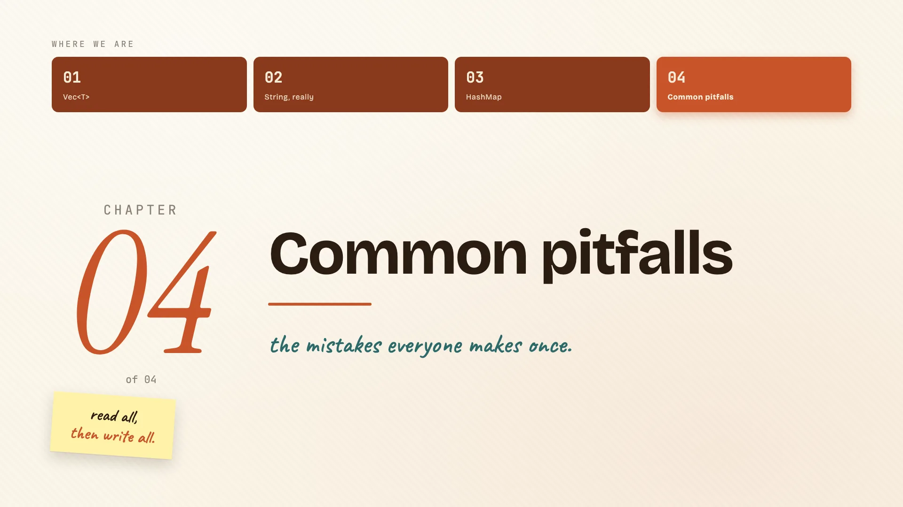
The mistakes everyone makes once.
Borrow while iterating
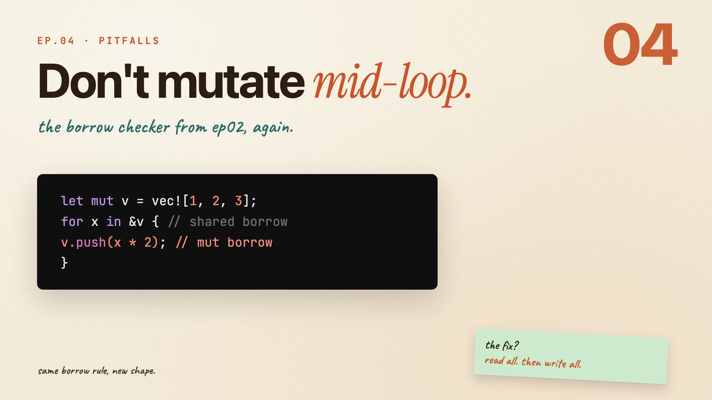
let mut v = vec![1, 2, 3];
for x in &v { // shared borrow
v.push(x * 2); // mutable borrow. conflict.
}
Iterating with &v hands the loop a shared borrow until it finishes. push needs a mutable borrow. You can't have both at once:
error[E0502]: cannot borrow `v` as mutable because it is also borrowed as immutable
Same rule from episode 2. New shape, same compiler answer.
Remember: same borrow rule. new shape.
Read all, then write all
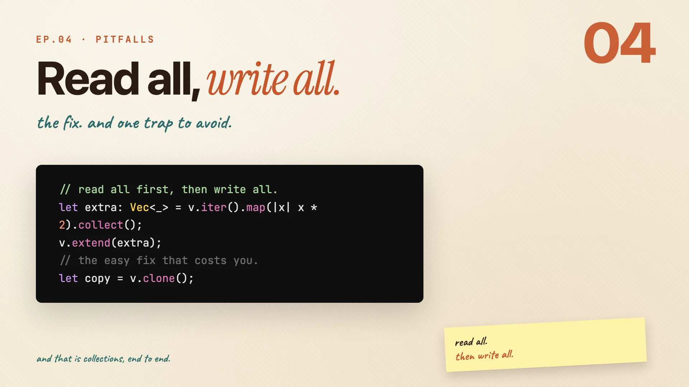
// read all first, then write all
let extra: Vec<_> = v.iter().map(|x| x * 2).collect();
v.extend(extra);
// and resist .clone() as the easy fix
collectis the read pass: produce the new items in a fresh Vec while you're only reading.extendis the write pass: mutatevonce nothing is borrowing it..clone()trap: cheap to type, not cheap to run. Reach for it on purpose, not by reflex.
Remember: read all. then write all.
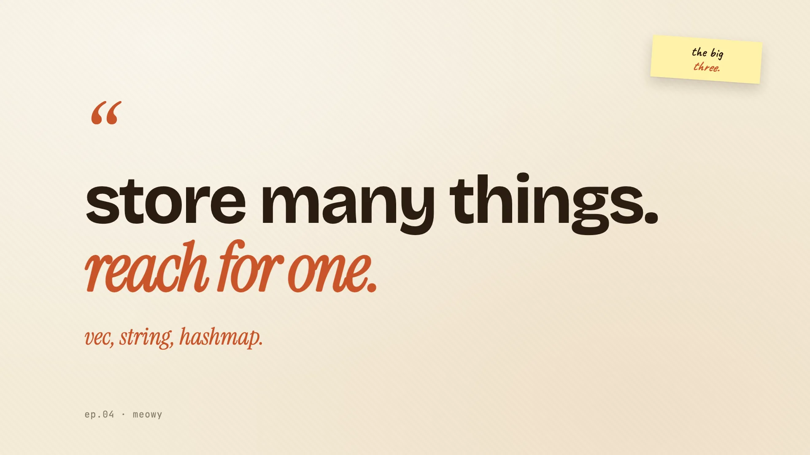
The whole episode in one line:
Store many things. Reach for one. Vec, String, HashMap.
Cheatsheet recap
One line per idea, in order. Skim this when you just need the reminder.
| Idea | Remember |
|---|---|
| Three collections | same rules. new shapes. |
| Why a Vec? | list. heap. owned. |
| Making a Vec | macro for known values. new for empty. capacity for big. |
| Changing a Vec | push, pop, insert. always an Option on pop. |
| Reading a Vec | .get for safe. & to iterate. len isn't capacity. |
| &str vs String | literal: &str. runtime text: String. accept &str. |
| Strings are UTF-8 bytes | english fits one byte. one cat does not. |
| Why s[0] doesn't compile | ask for chars or bytes. never s[0]. |
| Building strings | + moves the left. format! borrows. |
| Why a HashMap? | lookup by name. owned, like the rest. |
| Using a HashMap | get returns an Option. order is arbitrary. |
| Who owns the keys? | String moves. u32 copies. a & must outlive the map. |
| The check-then-insert mess | two lookups. there's a better way. |
| The entry API | one lookup. then decide. |
| Borrow while iterating | same borrow rule. new shape. |
| Read all, then write all | read all. then write all. |
Practice: Rustlings
05_vecs, 09_strings, 11_hashmaps.